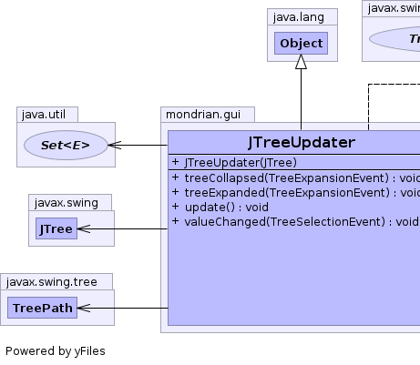
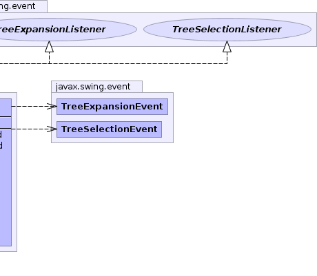

public class JTreeUpdater extends Object implements TreeExpansionListener, TreeSelectionListener
|  |  |
| Constructor and Description |
|---|
JTreeUpdater(JTree tree)
Constructor
|
| Modifier and Type | Method and Description |
|---|---|
void |
treeCollapsed(TreeExpansionEvent treeExpansionEvent) |
void |
treeExpanded(TreeExpansionEvent treeExpansionEvent) |
void |
update()
Call this method whenever you update the tree and needs it reloaded
|
void |
valueChanged(TreeSelectionEvent treeSelectionEvent) |
public JTreeUpdater(JTree tree)
tree - The tree to trackpublic void update()
public void treeExpanded(TreeExpansionEvent treeExpansionEvent)
treeExpanded in interface TreeExpansionListenerpublic void treeCollapsed(TreeExpansionEvent treeExpansionEvent)
treeCollapsed in interface TreeExpansionListenerpublic void valueChanged(TreeSelectionEvent treeSelectionEvent)
valueChanged in interface TreeSelectionListener